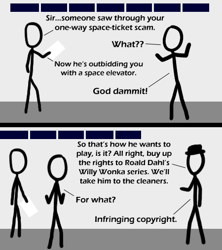

Comic JK 359
When I Feel Like It
⇤
<
?
>
⇥

⇤
<
?
>
⇥
Forum
.
RSS
.
Digg
.
Facebook
.
Reddit
.
Twitter
.
Stumbleupon
Enter your thoughts on number 359 here. Please, no spamming, trolling, or phreaking. Your mother looks like Willy Wonka. He needs no introduction. xkcd ref fun So apparently his white hat has turned black?!?! >No, TWH was on the other side. He was the one who saw through the scam. >>He is TWHs alter ego, TBH. TWH is to TBH like Mister Hyde to Doctor Jekyll, just the other way and no transformation. >>>I wonder why the classhole is helping them. >>>>How dare you make an xkcd reference! >>>> TWH VS TBH! It's like Spy vs. Spy, but in cleverness and loophole finding! Is the guy in the second panel an xkcd reference? I think I recognize him. >Look at the nose, the difference is obvious. >>You see, that's why this place is better than XKCD - you can't get comments like that there... >>>yeah you can >>>>There's a convenient link to forum.xkcd.com on xkcd, it's just a little further from the comic than this comment box is. >>>>>yet further it is